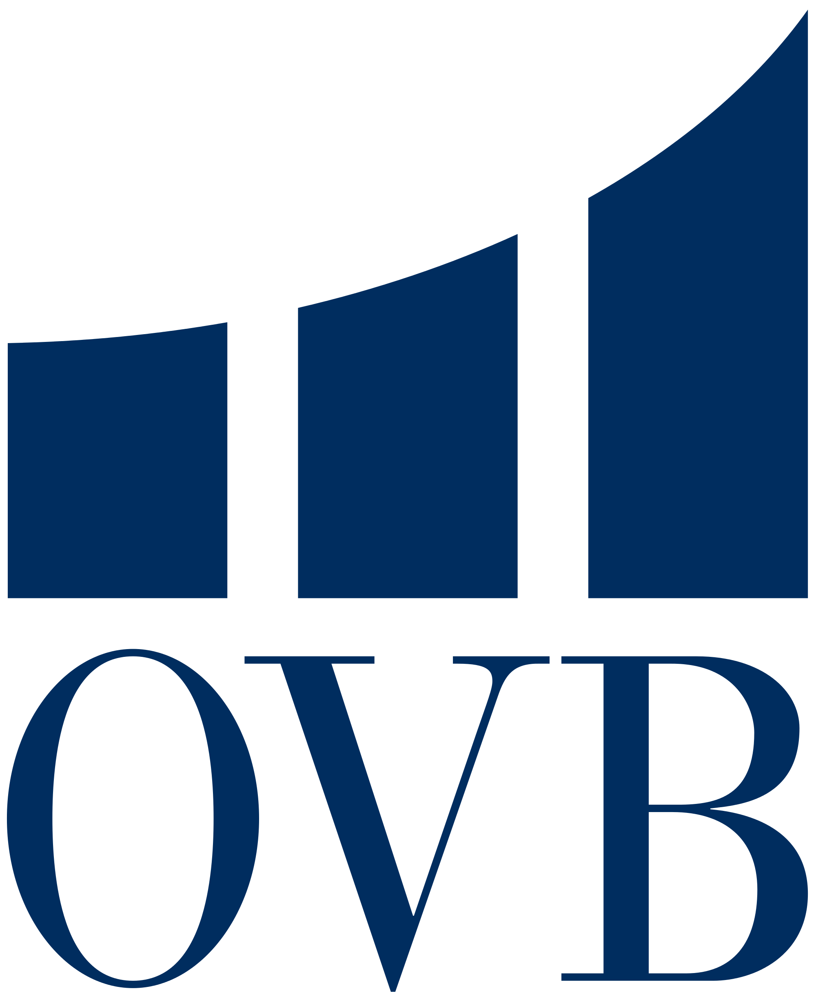

Experiencia Laboral
Assistant Manager - Astor Hostels London.
Reino Unido - Septiembre de 2015 a Junio de 2017.
Recepción. Ser un punto de contacto para cualquier cliente, responder llamadas, mails, etc. tareas administrativas, tales como, pagos o cuenta de resultados. Liderando un equipo de 12 miembros, en contacto directo con la oficina central. Realizando trabajo de back y front office. Organizar los horarios, etc.
Gestor de equipo - Ovb Allfinanz España S.L
España - Junio de 2012 a septiembre de 2014.
Comercialización de herramientas de mercados financieros; entidades bancarias, cajas, aseguradoras y sociedades de inversión. Creación de cartera de clientes, con atención personal y directa. Reclutamiento, entrevistas y supervisión del desarrollo de equipo.
Becario - Europa Press.
España - Septiembre de 2011 a febrero de 2012.
Dep. Recursos Humanos y Dep. Financiero; Contratos, becas, anexos y tratos con universidades para nuevos convenios. Control de personal así como de pagos y cobros. Facturación y contabilidad. Entrevistas y desarrollo de nuevos perfiles.
Estudios
U-tad. (Desarrollo de aplicaciones multiplataforma. FPII)
Septiembre 2018 - Actualmente.
En la universidad estoy
aprendiendo a desarrollar aplicaciones, tanto
móviles como para windows, páginas web, video-juegos, SCV,
programación en JAVA, así como, sistemas informáticos y bases
de datos SQL y PHP.
Colegio Retamar (Gestión administrativa FPI)
Septiembre de 2010 - Diciembre de 2011
Con una calificacón media de 8.
Superé el curso con gran éxito y una muy buena evaluación en mis
prácticas. Aprendí mucho sobre el mundo empresarial, RRHH,
contabilidad, fiscalidad, relaciones laborales, derecho y más.